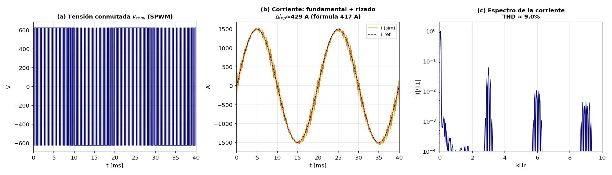
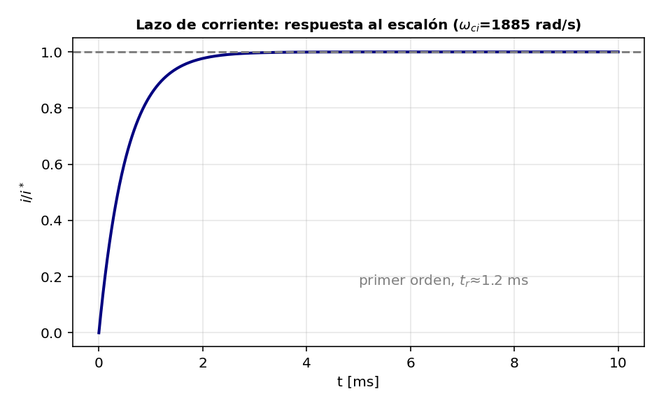
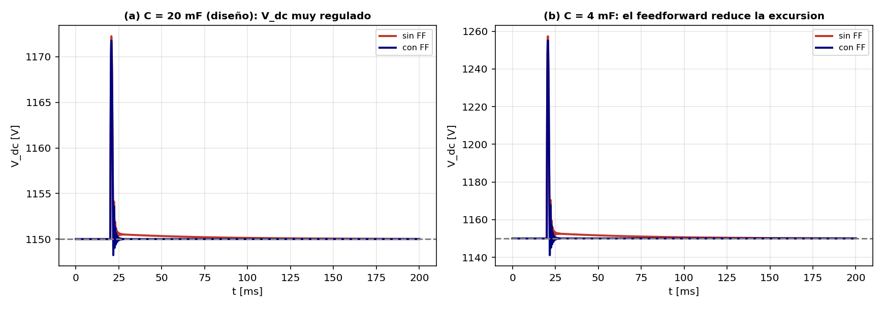

.sce).
Caso real de referencia (el ejemplo de la ficha): aerogenerador PMSG de 2 MW conectado a una red de 690 V a través de un back-to-back con bus DC de 1150 V.
| Especificación | Símbolo | Valor |
|---|---|---|
| Potencia nominal | \(P_{nom}\) | 2 MW |
| Tensión de red (línea) | \(V_{ac}\) | 690 V |
| Tensión del bus DC | \(V_{dc}\) | 1150 V |
| Frecuencia de red | \(f_0\) | 50 Hz |
| Frecuencia de conmutación | \(f_s\) | 3 kHz |
| Inductancia de filtro | \(L\) | 0.25 mH |
| Condensador de bus | \(C_{dc}\) | 20 mF |
El proyecto se organiza en módulos de Scilab, cada uno un paso de la metodología:
| # | Módulo | Qué valida |
|---|---|---|
| 1 | 01_modulacion.sce | Modulador PWM: portadora, referencias y pulsos. SPWM vs 3.er armónico vs SVPWM. |
| 2 | 02_etapa_potencia.sce | VSC conmutado + filtro L: rizado de corriente y THD frente a lo previsto. |
| 3 | 03_lazos.sce | Lazos de control: corriente (interno) y tensión del bus DC (externo). |
| 4 | 04_diseno.sce | Diseño iterativo de componentes (\(V_{dc}, L, C\)) desde las especificaciones. |
El modulador de dos niveles compara una referencia (la tensión media que se quiere sintetizar, \(\bar v = m\,\frac{V_{dc}}{2}\sin\theta\)) con una portadora triangular a \(f_s\); el interruptor superior está ON mientras la referencia supere a la portadora. Se comparan tres estrategias:
// pulsos: el superior conduce mientras la referencia > portadora pulso_a = bool2s(va > portadora); vconv_a = (pulso_a*2 - 1) * (Vdc/2); // +Vdc/2 o -Vdc/2
Se integra la ecuación del filtro \(L\frac{di}{dt}=v_{conv}-v_g-R\,i\) con la tensión conmutada real. La corriente resulta ser la fundamental deseada más un rizado a la frecuencia de conmutación.

Planta \(1/(Ls+R)\); PI sintonizado por IMC (\(T_i=L/R\) cancela el polo, \(K_p=\omega_{ci}L\) fija el ancho de banda \(\omega_{ci}=1885\) rad/s). El lazo cerrado es de primer orden:

Regula \(w=V_{dc}^2\) (planta integradora \(2/(C_{dc}s)\)) con un PI de óptimo simétrico y un feedforward de potencia \(P_{MSC}/(1.5\,v_{d,g})\) que adelanta la corriente del GSC.

A partir de las especificaciones se dimensionan \(V_{dc}\), \(L\) y \(C_{dc}\) y se comprueba que cumplen (módulo 4):
| Componente | Criterio | Fórmula | Valor |
|---|---|---|---|
| \(V_{dc}\) | sintetizar el pico de red con margen | \(\geq 2\hat v_{fase}/m_{max}\) | 1150 V |
| \(L\) | rizado de corriente ≤ 20 % | \(\geq V_{dc}/(4 f_s \Delta i_{L,max})\) | 0.25 mH |
| \(C_{dc}\) | caída de \(V_{dc}\) ante escalón | \(\geq P_{nom}\Delta t/(V_{dc}\Delta V_{dc})\) | 20 mF |
Verificación de estabilidad frente a la carga de potencia constante (CPL): \(K_{p,dc}=1.885 > P_{2,max}/(2V_{dc,0}^2)=0.756\) → estable.
En la consola de Scilab, en la carpeta del proyecto:
exec('01_modulacion.sce', -1) // modulación y pulsos
exec('02_etapa_potencia.sce', -1) // rizado y THD
exec('03_lazos.sce', -1) // lazos de corriente y bus DC
exec('04_diseno.sce', -1) // diseño iterativo de componentes
Los scripts están en el repositorio de GitHub, comentados línea a línea.